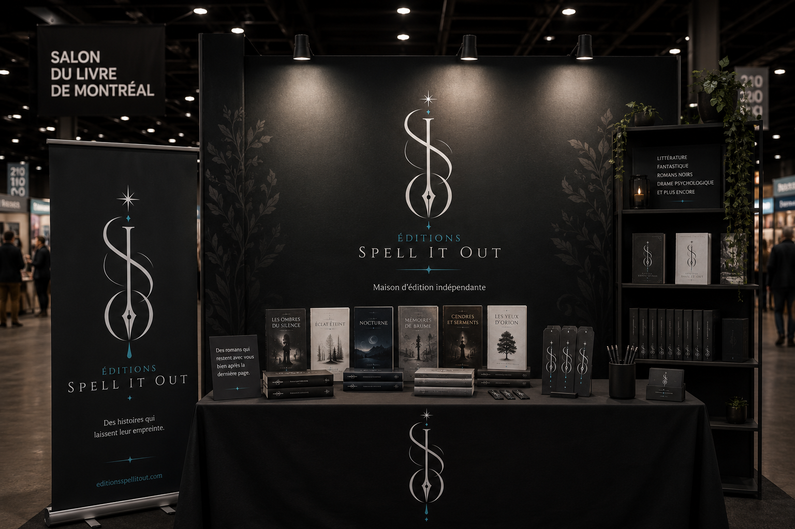
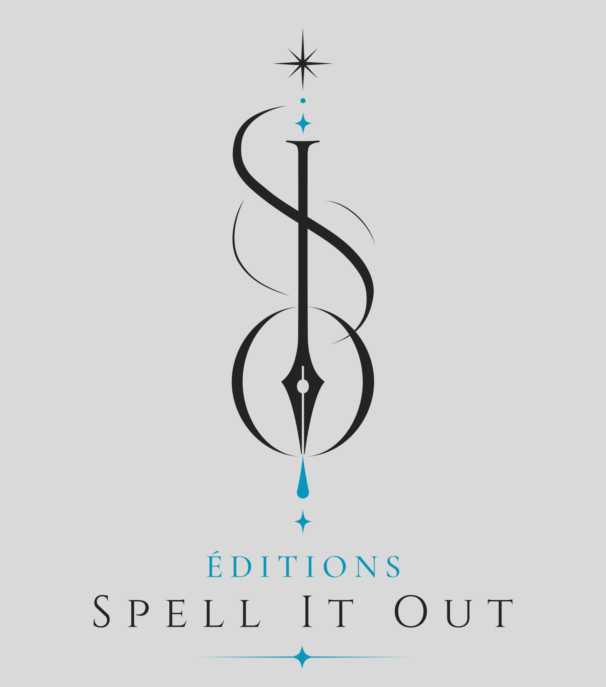

PROJET RÉEL
Spell It Out
Maison d'édition dédiée aux auteurs neurodivergents.
Spell It Out est une maison d'édition qui accompagne les auteurs neurodivergents dans leurs premiers pas vers la publication. L'identité visuelle a été pensée pour évoquer la créativité, la confiance et le plaisir de raconter des histoires, tout en offrant une image professionnelle capable d'accompagner les écrivains dans leur parcours.

Identité visuelle
Logo principal

Icône secondaire
Palette
#25282C
#F4F1EA
#3FB7D6
#9DE8F5
#111315
Typographie
Cinzel
The quick brown fox jumps over the lazy dog.
0123456789
Inter
The quick brown fox jumps over the lazy dog.
0123456789